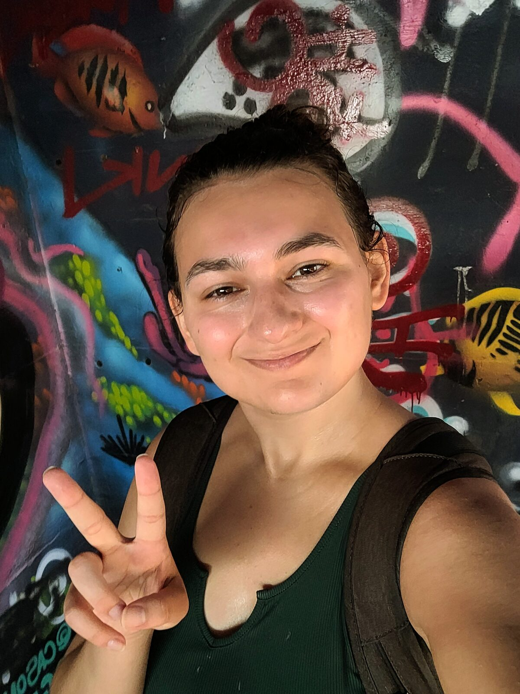
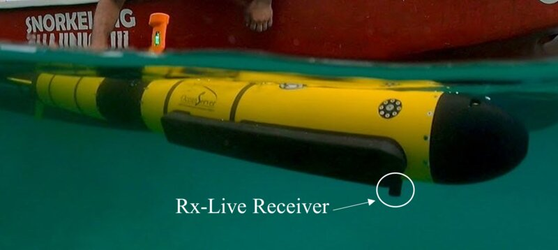

I am a Ph.D. student at UCSD advised by Prof. Xiaolong Wang and Prof. Michael Tolley. I am an NSF GRFP Fellow.
My research focuses on co-design: generating and evolving designs from data alongside intelligent control.
Previously, I also spent time at Amazon Robotics and worked at Carnegie Mellon University with Deepak Pathak. I did research on underwater robots at LAIR at Harvey Mudd College.
Feel free to reach out for research collaborations or if you would like to chat :)
Publications
Robot Co-Design
International Conference on Learning Representations (ICLR), 2026
TL;DR:Design discovery and co-design of dexterous robot hands, with zero-shot sim-to-real transfer.
Dexterous manipulation is limited by both control and design, without consensus as to what makes manipulators best for performing dexterous tasks. This raises a fundamental challenge: how should we design and control robot manipulators that are optimized for dexterity? We present a co-design framework that learns task-specific hand morphology and complementary dexterous control policies. The framework supports 1) an expansive morphology search space including joint, finger, and palm generation, 2) scalable evaluation across the wide design space via morphology-conditioned cross-embodied control, and 3) real-world fabrication with accessible components. We evaluate the approach across multiple dexterous tasks, including in-hand rotation with simulation and real deployment. Our framework enables an end-to-end pipeline that can design, train, fabricate, and deploy a new robotic hand in under 24 hours.
@inproceedings{fay2026houseofdextra,
title={House of Dextra: Cross-embodied Co-design for Dexterous Hands},
author={Fay, Kehlani and Djapri, Darin Anthony and Zorin, Anya and Clinton, James and El Lahib, Ali and Su, Hao and Tolley, Michael T. and Yi, Sha and Wang, Xiaolong},
booktitle={International Conference on Learning Representations (ICLR)},
year={2026}
}
Generalizing Control
Catch It All!: Generalizable Dynamic Catching with a Dexterous Hand
Under review, 2026
TL;DR:Generalizable egocentric catching, both underhand and overhand.
Catching arbitrary objects requires generalization to novel projectiles and real-time adaptation to unpredictable contact dynamics under noisy visual observations. This paper presents Catch It All!, a sim-to-real catching framework for humanoid robots that generalizes and adapts to unseen objects with variable physical properties for underhand and overhand catches, using only one egocentric camera. We learn policies which generalize to unseen objects with varying geometry, deformability, elasticity, and physical properties. Effective grasps which adapt real-time to object poses and shapes are learned through careful grasp reward design. We provide safety-aware curricula which enable safe, high-frequency action execution near hardware limits, including wrist torque limits as low as 5 N·m. We validate our system by deploying zero-shot on a Unitree G1. With only one egocentric camera, Catch It All! successfully performs underhand and overhand catches on 9 unseen objects not seen during training, including low-rebound plushes, semi-deformable toys and chip bags, and rigid-elastic objects with high rebound on contact.
@misc{shukla2026catchitall,
title={Catch It All!: Generalizable Dynamic Catching with a Dexterous Hand},
author={Shukla, Arth and Fay, Kehlani and Liu, Patrick and Djapri, Darin and Buynitsky, Alexiy and Hansen, Nicklas},
year={2026},
note={Pre-print, under review}
}
Conference on Robot Learning (CoRL), 2025
TL;DR:Understanding how cross-embodiment scales with locomotion.
Cross-embodiment generalization underpins the vision of building generalist embodied agents for any robot, yet its enabling factors remain poorly understood. We investigate embodiment scaling laws, the hypothesis that increasing the number of training embodiments improves generalization to unseen ones, using robot locomotion as a test bed. We procedurally generate ~1,000 embodiments with topological, geometric, and joint-level kinematic variations, and train policies on random subsets. We observe positive scaling trends supporting the hypothesis, and find that embodiment scaling enables substantially broader generalization than data scaling on fixed embodiments. Our best policy, trained on the full dataset, transfers zero-shot to novel embodiments in simulation and the real world, including the Unitree Go2 and H1. These results represent a step toward general embodied intelligence, with relevance to adaptive control for configurable robots, morphology co-design, and beyond.
@inproceedings{ai2025embodiment,
title={Towards Embodiment Scaling Laws in Robot Locomotion},
author={Ai, Bo and Dai, Liu and Bohlinger, Nico and Li, Dichen and Mu, Tongzhou and Wu, Zhanxin and Fay, Kehlani and Christensen, Henrik I. and Peters, Jan and Su, Hao},
booktitle={Conference on Robot Learning (CoRL)},
year={2025}
}
Undergraduate Research
Multi-Agent Marine Robotics

IEEE Journal of Oceanic Engineering (JOE), 2026
TL;DR:Tracking sharks with multiple AUVs, each carrying just one hydrophone, using an HMM-based particle filter to fuse their measurements.
Researchers tag and track marine animals to study migration patterns, human impacts on behavior, and behavioral shifts due to climate change. Accurate data collection often requires tagging individual animals to collect spatio-temporal state estimates of the animal's geo-position and depth. Acoustic transmitters are prominent due to their continuous communication without requiring retrieval or surfacing to collect data. These transmitters emit underwater acoustic pulses which can be detected by hydrophones. However, the frequent movement of aquatic animals results in high data loss when the animal moves out of the detection range of a stationary hydrophone. Autonomous underwater vehicle (AUV) systems offer a solution for localizing transmitters with higher resolution over longer periods of time. Such systems previously deployed have often required multiple hydrophones mounted on a large frame carried by the AUV, increasing drag and limiting speed. This work provides an alternative by equipping multiple AUVs with a single compact hydrophone payload. A particle filter algorithm equipped with a hidden Markov model (HMM) behavioral motion model fuses measurements from multiple AUVs to estimate the transmitter's position. Real-world data shows a root mean square error (RMSE) of approximately 10 meters for short-term deployments, and a larger simulated dataset shows an RMSE of approximately 15 meters for longer deployments over a larger area. The HMM fit to historical animal movement data outperforms a generic velocity motion model, and both outperform a baseline random walk motion model.
@article{herrera2026multiauv,
title={Multi-AUV Marine Life Tracking with Single Hydrophone Payloads via a Hidden Markov Model Equipped Particle Filter},
author={Herrera, Christopher and Fay, Kehlani and Clark, Christopher and Soto, Alberto and Lowe, Christopher G. and Espinoza, Mario},
journal={IEEE Journal of Oceanic Engineering},
year={2026}
}
ACM/SIGAPP Symposium on Applied Computing (SAC), 2023
TL;DR:Multi-robot motion planning for AUV swarms that plan trajectories around predicted shark movement, not just current position.
Traditional techniques for marine life tracking use stationary receivers that detect and obtain measurements from tagged animals. Recently, such static systems have been replaced by multiple mobile robots, e.g., autonomous underwater vehicles (AUVs), equipped with omni-directional hydrophones that can accurately localize marine life. In this paper, the application of homogeneous multi-AUV systems to track and localize marine life is used as a motivating example to develop new MRMP (Multi-Robot Motion Planning) algorithms. These algorithms generate trajectories that maximize a new fitness function that incorporates 1) probabilistic motion models generated from historical data of live sharks, and 2) ideal AUV formations for observing a shark from multiple sensor vantage points. The two expansive RRT variants, named Independent State Expansion (ISE) planning and Joint State Expansion (JSE) planning, differ in how new samples are randomly generated during the algorithm's random search. The fitness function was developed to quantify how accurately the positioning of AUVs would trilaterate the target animal. Through simulation, it was found that the Joint planner was 70% faster with respect to run time than the Independent planner, while both could produce similar mean fitness function values. The fitness for these variants was also measured for simulations where different target motion models were used when calculating the fitness function, highlighting the improved performance when using actual target motion models.
@inproceedings{fay2023multirobot,
title={Multi-Robot Expansive Planning and Trajectory Evaluation for Tracking and Localization of Marine Life},
author={Fay, Kehlani A. and Giordano, Michael and Soto, Alberto and Clark, Christopher M. and Spurgeon, Emily and Anderson, James and Lowe, Christopher G.},
booktitle={Proceedings of the 38th ACM/SIGAPP Symposium on Applied Computing},
series={SAC '23},
pages={808--815},
year={2023},
publisher={ACM},
doi={10.1145/3555776.3577749}
}